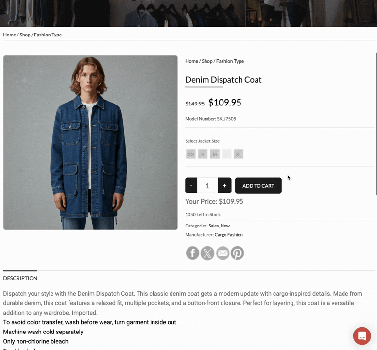
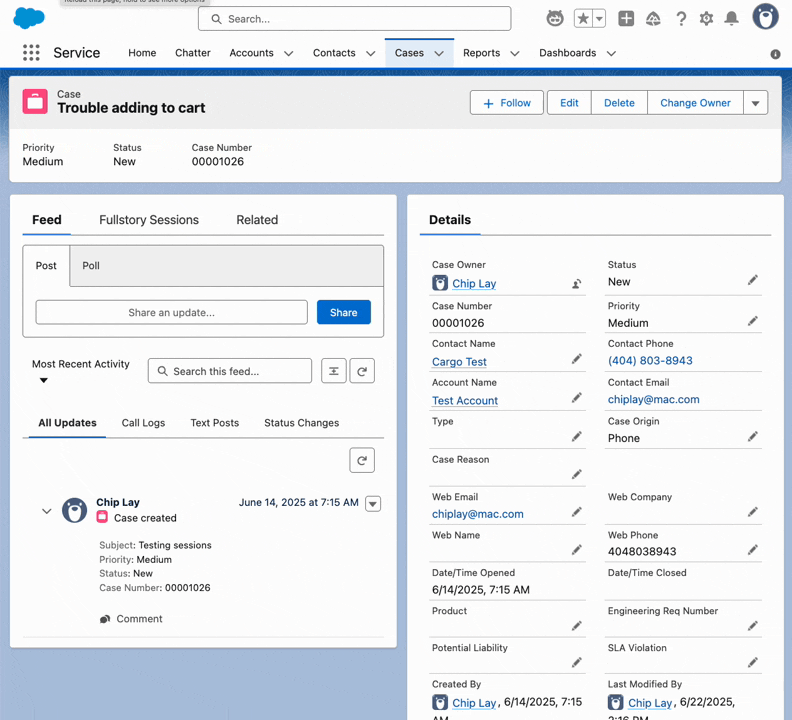
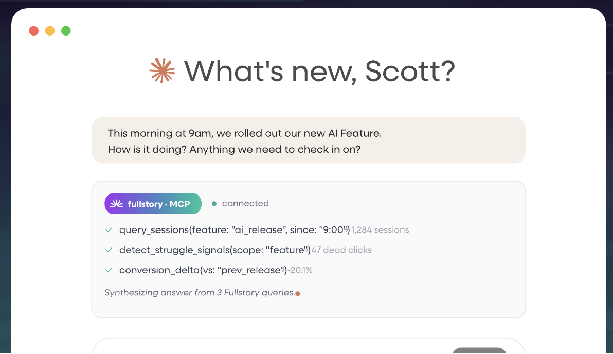

get_session_events, get_session_summary.

get_session_events(session_id) · get_session_summary(session_id)
fs_behavioral_archetype = "Habitual Direct Buyers"
AND is_promo_user = false AND is_high_frequency = true
Audience Agent segments this cohort automatically. U13 users get a streamlined re-order experience — no promotional banners, mobile-first layout. Personalization driven by behavioral identity, not demographic inference.

query_sessions · detect_struggle_signals · conversion_delta